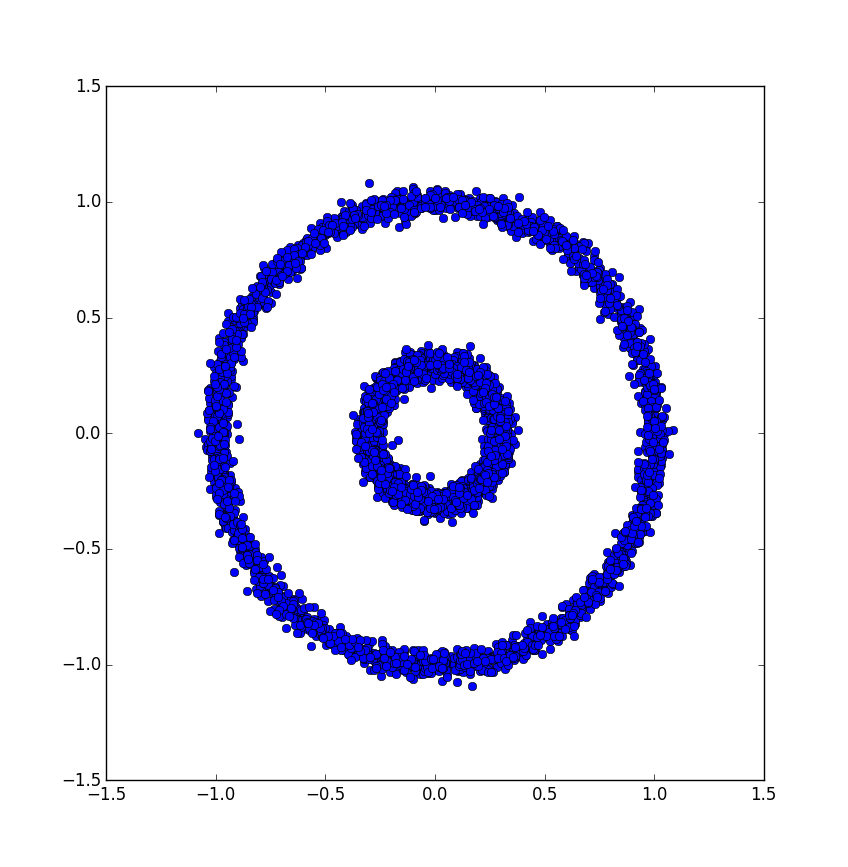

This manuscript investigates the influence of shape of the data on the persistent diagrams produced by TDA. This document also provides a brief outline on how TDA works in Mathematical sense. It also introduces the reader Mathematical concepts that are essential for understanding of TDA.
We here assume the reader is familiar with topological concepts such as Toplogical spaces, Topology,Homemorphisms,Open and Closed sets.
Are two topological space equivalent?
The whole study of topology is to based on the above question. We need to find a homemorphisim between two given spaces to prove that there are equivalent, and this procedure is difficult.So, we try and show a relatively simpler problem that is to show that two spaces are not eqivalent we find topological invariants in both the spaces and if they are not equal then we conclude the space are not equivalent.One such topological invariant is called the Fundamental Group.
Let $(X,\tau)$ be a topological space. If $f,f^{'}$ are continuous maps from the space $X$ into $Y$, we say $f$ is homotopic to $f^{'}$ if there exist a continuous map $F:X \times [0,1] \rightarrow Y$ such that $F(x,0)=f(x)$ and $F(x,1)=f^{'}(x)$ for each $x$.
Homotopy is the collection of continuous 1-parameter family of maps from $X \rightarrow Y$. As the parameter continuously changes from o to 1, the functions continuously deform from $f$ to $f'$.
Two paths $f$ and $f'$ mapping $[0,1]$ into $X$ are said to be path homotopic if they have same initial point $x_{0}$ and same final point $x$ and if there is a cont map $F:[0,1] \times [0,1]\rightarrow X$ such that $F(s,0)=f(s)$, $F(s,1)=f'(s)$, $F(0,t)=x_{0}$ and $F(1,t)=X_{0}$
Homotopy and Path-Homotopy are equivalance relations. Hence they partition the space of paths into equivalance classes call it S. $f$ is a path in $X$ from $x_{0} \rightarrow x_{1}$
$g$ is a path in $X$ from $x_{1} \rightarrow x_{2}$
then the product $f*g$ is the path $h$ st
$h$ is continuous and well defined path from $x_{0} \rightarrow x_{2}$
The equivalance classes S along with the product operation forms a Groupoid.It forms a groupoid instead of a group because, the product betwen two paths is always not defined. So to $S$ into a group we will set $x_{0} \in X$ as a base point and restrict all homotopic classes that start and end at the basepoint call it $G$. Now $G$ is group with the product operation. We call this group $G=\pi_{1}(X,x_{0})$ as the Fundamental group of $X$ relative to the base point $x_{0}$
If $X$ is path connected and $x_{0},x_{1}$ are two points of $X$ then $\pi_{1}(X,x_{0})$ is isomorphic to $\pi_{1}(X,x_{1})$
Simplicial complexes are made of collection of simplices(satisfying some properties), which are generalization of triangles in k-dimensions. These simplices are basic building blocks of topology which we will be constructing from the Data point in higher dimension. Given any two spaces $X$ and $Y$ we can decompose them into simplices $\{X\}_{i},\{Y\}_{i}$ and any continuous map $f:X \rightarrow Y$ can be approximated by a linear map $f_{i}$ on each simplex $i$. Moreover this approximating map $\sum_{i}f_{i} \equiv f$ ie, they belong to same homotopy class.
A set $\{V_{0},V_{1},\dots,V_{k} \}$ of vectors in a vector space $V$ is convex independent if the set $\{V_{1}-V_{0},V_{2}-V_{0},\dots,V_{k}-V_{0} \}$ is linearly independent.
Let $\{V_{0},V_{1},\dots,V_{k} \}$ be a convex independent set then the smallest convex set containing $\{V_{0},V_{1},\dots,V_{k} \}$ is called a close k-simplex of dimension k.
If $v \in [V_{0},V_{1},\dots,V_{k}]$ a k-closed simplex then if $v=\sum_{i} a_{i} V_{i}$ then the coefficients $a_{i}$ with $a_{i} \geq 0,\sum_{i} a_{1} =1$ is called the barycentric coordinates.
Let $\{V_{0},V_{1},\dots,V_{k} \}$ be a convex independent set, the set $\{v \in [V_{0},V_{1},\dots,V_{k}],a_{i} > 0,i=1,2,\dots,k\}$ is called the open simplex.
A simplicial complex (K) is a finite set of open simplicies in some ${\rm I\!{R}^{n}$ such that
If $(s) \in (K)$ then all open faces of $[S] \in (K)$
If $(s_{1}),(s_{2}) \in K$ and $(s_{1}) \cap (s_{2}) \neq \phi $ then $(s_{1})=(s_{2})$
A k-simplex contains $k+1$ vertics
A sub complex of a simplicial complex(K) is a simplicial complex(L) st $(s) \in L \implies (s) \in K$
Let $K$ and $L$ be two simplicial complexes. A map $\phi:[K] \rightarrow [L]$ is a simplicial map if
For each vertex $v \in K \implies \phi(v) \in L$
For each simplex $(v_{0},v_{1},\dots,v_{k}) \in K$ the vertices $(\phi(v_{0}),\phi(v_{1}),\dots,\phi(v_{k}))$ all lie in some closed simplex of $L$
For each $(s) \in K$ and $p=\sum_{i=0}^{k} a_{i}v_{i} \in (s)$ the image of the point p is $\phi(p)=\sum_{i=0}^{k} a_{i} \phi(v_{i})$
We first define a set of operation on structures of simplicial complex $K$
It is an ordered pair $e=(v_{1},v_{2})$ of vertices of $K$ such that $v_{1},v_{2}$ lie in some simplex of $K$
It is a finite sequence $w=e_{1}e_{2} \dots e_{k}$ of edges in $K$ such that for each $i \in (1,2,\dots,k-1)$ the end of $e_{i}=$ the origin of $e_{i+1}$
Let $\omega=e_{1}e_{2} \dots e_{k},\tau=e_{1}^{'}e_{2}^{'} \dots e_{k}^{'}$ be routes such that end of $e_{k}=$ origin of $e_{1}^{'}$ then $\omega * \tau =e_{1}e_{2} \dots e_{k}e_{1}^{'}e_{2}^{'} \dots e_{k}^{'}$.
If $\omega=e_{1}e_{2} \dots e_{k}$ then $\omega^{-1}=e_{k}^{-1}e_{k-1}^{-1} \dots e_{1}$
Let $e=(v_{1},v_{2}),f=(v_{2},v_{3})$ then $e*f$ is edge equivalent to $(v_{1},v_{3})$
Let $K$ be a simplicial complex, $v$ a vertex of $K$ and $E(k,v)$ be the set of edge equivalent classes of routes in $K$ with origin $v$ and end $v$ then $E(k,v)$ is a group with identity $(v,v)$ under the operation $*$ and inverse defined as above. This group is called the edge path group of $K$ at $v$.
Let $K$ be a simplicial complex and let $v_{0}$ be a vertex of $K$ then $E(K,v_{0})$ is isomorphic with $\pi_{1}([K],v_{0})$
Let $S$ be a $l-$simplex with vertices $(v_{0},v_{1},\dots,v_{l})$ consider two orderings $(v_{j_{1}},v_{j_{2}},\dots,v_{j_{l}})$ and $(v_{k_{1}},v_{k_{2}},\dots,v_{k_{l}})$ of the vertices they are equivalent if $(k_{1},k_{2},\dots,k_{l})$ is an even permutation of $(j_{1},j_{2},\dots,j_{l})$. This is a equivalence relation and it partitions the ordering of vertices $(v_{0},v_{1},\dots,v_{l})$ into two equivalence classes.
An oriented simplex is a simplex $S$ together with a choice of one
of the equivalence classes denoted by $
Let $K$ be a simplicial complex and $I$ Group of integers.
$C_{l}(K,l)=\frac{X}{Y}$ where,
$X$- Free group generated by all
oriented simplices of $K$
$Y$ is the subgroup generated by
$(
$C_{l}(K,l)$ is a abelian group and is called group of l-chains
of K with integer coefficients.
Let $ < s > = < v_{0},v_{1},\dots,v_{l+1}>$ be a $(l+1)$ oriented
simplex. The boundary $\parial$ of $< s >$ is the $l-1$ chain
defined by
$\partial =\sum_{j=0}^{l+1}(-1)^{j} < v_{0},v_{1},\dots,v_{j-1},v_{j+1},\dots,v_{l+1}>$
Let $K$ be a simplicial complex and let $G$ be an abelian group
then the boundary map
$ \partial:C_{l+1}(K,G) \rightarrow C_{l}(K,G)$
is defined as
) =\sum g_{s} \partial(s)>
Boundary of a boundary is $0$, ie the $\partial$ $^{2}=0$
Given a simplicial complex $K$ and a abelian group $G$ let
$Z_{l}(K,G)={c \in C_{l}| \partial(c) =0}$
all elements of $Z_{l}$ are called cycles
$B_{l}(K,G)={\partial(c)|c \in C_{l+1}(K,G)}$
such $\partial (c)$ are called boundaries
We define the $l^{th}$ homology group as $H_{l}(K,G)=\frac{Z_{l}(K,G)}{B_{l}(K,G)}$
We define the $l^{th}$ betti number $\beta_{l}$ of $K$ is the integer defined as
$\beta_{l}=dim(H_{l(K,G)})$
Here in TDA we will work with $G=Z_{2}$ and
$\beta_{0}$ denotes the number of connected components
$\beta_{1}$ denotes the number of 1 dimensional holes
$\beta_{2}$ denotes the number of 2 dimensional holes
TDA stands for topological data analysis, where we use topological methods to analyse the data. Analysis of topological aspects of the data provide a breif insight into the properties of the system. Since Higher dimension data cannot be visuvalized directly we apply techniques such as these to infer about the topological aspects of it, such as number of connected components or number of n dimensional holes. TDA is not only used to infer topological aspects of the Data, but it is also used as a tool in cluster analysis and lot more. We will try and explore all of these here. TDA uses persistent homology techinques to create topology out of the data and calculate its betti numbers.
So how is a topology made out of a set of datapoints? TDA has mainly two methods to approach this problem
In this method we create a vectoris rips complex $R(X,\epsilon)$ by varying $\epsilon$ over user specified range and $X$ denotes the data.$R(X,\epsilon)$ consist of simplices with vertex in $X$ and diameter atmost $\epsilon$. $\sigma$ is included in a simplicial complex $K$ if each pair of the vertices in $\sigma$ are atmost $\epsilon$ distance apart. For each epsilon we get different topological spaces.
Filtration is a set on increasing simplicial complex such that $\phi = K_{0} \subseteq K_{1} \subseteq \dots \subseteq K_{n}=K$ where $\phi$ is the filtration and $K$ is the simplicial complex. TDA creates the filtration in two different ways based on which type of method was used to create the topology
By creating a sublevel set with parameter $a$ and varying the parameter $a$ will give different simplicial complexes which will form the filtration
By varing $\epsilon$ in rips complex will give rise to rips filtration
We are interested in the topological evolution of topological charateristics of the data. Now,to quantify the evolution of the topological charateristics we calculate the $l^{th}$ betti number $\beta_{l}$ for all simplexes in the filtration. From this we see which features(ie, $\beta_{l}$)of the data persisted for a longer time over the filtraion. We then define birth of a feature(ie, connected component or a 1-dim hole ..etc) that is the first time the feature appears and death of the feature is the first time the feature disappers as we transverse through the filtration. Persistent diagram is the plot between birth time and death time with each point representing a feature. Anything that is on the $45$ degree line is considered to be error because it represents the features that persisted for smaller time interval. We search for features that are far away from this $45$ degree lines in the persistent diagram.
We aim to see how structure of the dataset is reflected in persistent diagrams. Hence we approach this problem by simulating different set of data and plotting persistent diagrams for each of these. The left plots(X vs Y) represents the simulated dataset and the rightplots(Birth Vs Death) represent the persistent diagrams. Each point in the persistent diagram represents a connected component.
We used Vector Rips complex method along with Rips filtration to plot these plots. We can from Plot:1 and Plot:2 that there are two connected components which merge to one another to form a single connected component. This feature is correctly represented in the respective persistance diagrams by the points which move away from the $45$ degree line and merge with the point above. Representing that initially there were two connected components which merged to form one. If you look at Plot:2 and Plot:3 we see that as the points scatter that they move away from each other or as the resolution decreases. We can see errors building up in the persistent diagram and all these errors lie on the $45$ degree line representing that these features lived only for short period and that it must be due to lack of resolution.
We set to apply the above method of analysis to a real world dataset of diabetes, the aim was to figure out if the above algoritm is able to classify ie, cluster out the diabetic and healthy individuals. That is we expect to obsereve two connected components one denoting the healthy and the other patients
The data consist of "GSH" and "HbA1c" as features and 100
individuals for whom the feature values have been measured. Out of
this 100 there are 49 healthy individuals or controls and 51 diabetic
partients. The following diagram was plotted after z-scoring the data
Density clustering is a part of the TDA package. It is a clustering algorithm which works based on density estimates of the dataset. Here we will use density clustering method from the TDA package on the above mentioned Diabeties dataset to reinforce the our hypothesis of a new subtype or subgroup of the population.
Let $X_{n}={x_{1},x_{2},\dots,x_{n}}$ be the samples from a unknown distribution $P$ on $R^{d}$ with each $x_{i}$ independent. Let $f$ denote the probability distribution of $P$ and let $A \subset R^{d}$ then the probability of observing data points $X_{n}={x_{1},x_{2},\dots,x_{n}}$ inside $A$ is $P(A)=\integral_{x \in A}f(x)dx$, where the integral is lebegue integral.
Now we define clusters as the regions of high density ie,probability seperated by regions of low density. Now, we define a level set $L_{f}(\lambda)=cl{x \in R^{d}|f(x) \geq\lambda}$. $L_{f}(\lambda)$ is a set in $R^{d}$ with each point in the set having density greater than $\lambda$. Any d-dimensional subset of $L_{f}(\lambda)$ is called a high density region. Maximal connected subset of $L_{f}(\lambda)$ is called a High density cluster of P. Now as we vary the $\lamba$ from $0$ to $\infty$, we record the evolution of high density clusters of P. This creates a cluster density tree of P. $T={$L_{f}(\lambda)$|\lamba \geq 0}$. This $T$ is called a tree and it satisfies
If $A,B \in T$ then $A \subset B$ or $B \subset A$ or $A \intersect B = \phi$
This tree is called the $\lamba$ tree, simillarly we can define $\alpha$ index tree and $\kappa$ index tree. We applied the above described method to the above described diabetes dataset and we found that density clustering algorithm supports our claim.
We here try to understand the workings and inner aspects of the famous Mapper algorithm. Mapper is a part of the TDA toolkit. We here read a paper Topology based data analysis identifies a subgroup of breast cancers with a unique mutational profile and excellent survival. to understand how they used mapper and DSGA to identify a subgroup of patients.
Mostly all computational part of the data analysis ultimately identifies the shape charateristic of the data eg: Clustering algorithms looks for clusters which are shape charateristic of the data..etc. Hence shape recogonizion of a dataset in high dimension is highly crucial for analysis. In this paper they describe a method called Progression Analysis of Disease(PAD) , the following are the advantages of this method
DSGA is a genome analysis technique that employs comparision to normal expression to extract data that is closely related with the disease. DSGA is used to analyse gene expression datasets of healthy and diseased individuals which are retrived from analysis of microarrays. The microarray dataset contains intensity values for each gene representing the expression level of that particular gene in the genome sequence, for example
DSGA tranforms the above array into two sums "Normal Component" $+$
"Diseased Component", where the normal component mimics the
normal/healthy tissue gene expression. It assumes
that mathematical model for normal expression is a linear subspace
which is derived from normal tissue gene expression.
This
assumption is crucial. This assumption is valid in biological setting
only for specific diseases/tissues. For example
consider Cancer where tumors are devoloped in tissues. These
tumors are due to overexpression or underexpression of specific genes
which are related to cancer. Hence the ratio of these cancer genes are
different in the cancer patients and healthy individuals. Hence, if we
consider gene expression of each individual as a vector
$V=(gene1,gene2,\dots)$ then there exist atleast one coordinate $i$
where the $gene_{i}$ is overexpressed or underexpressed in cancerous
than healthy individual. $V$ of healthy individuals should span a
linear subpace, because if we somehow minimize the unique
charateristic of that sample or individual then the ratios of genes
$\frac{g_{i}}{g_{j}}$ of healthy individuals should be
comparable. Hence we assume that normal expression data forms a linear
subspace. We then define the diseased components as deviations from
this linear subspace, ie residuals from this linear model. DSGA is
done in two steps one being creating this normal/healthy linear
subspace and projecting the array(to analyse) on this space
To obtain a good approximation of normal expression data we first
reduce its dimension using a modified verison of PCA and then create a
linear subspace by taking span of it.
Let
$(T_{1},T_{2},\dots,T_{s})$ denote diseased tissue data and
$(N_{1},N_{2},\dots,N_{r})$ denote normal/healthy tissue data. Let
$v=(g_{1},g_{2},\dots,g_{\gamma})$ denote the gene expression vector
and $v \in R^{\gamma}$.
Then $\mathcal{N}_{all}=
We need to construct $\mathcal{N}$ such that
$\mathcal{N} \subset N_{all}$ as a subspace
To do this we apply two steps
To minimize the impact of the data charateristics that are unique
to an individual or tissue sample we apply FLAT Construction.
Given $\{ N_{1},N_{2},\dots,N_{r} \}$ We define $\hat{N}_{i}$(flat
vector) as the "least square fit" of the linear model
$\sum_{j \neq i}^{r} \beta_{j} N_{j}$ with $0$ intercept. We do this for
each and every N to create $\{ \hat{N}_{1},\hat{N}_{2},\dots,\hat_{N}_{r} \}$.
We now apply
PCA on these Flat constructed vectors to reduce its dimension say to $l$, which is a
parameter in our model. Now we define $\mathcal{N}=< \hat{N}_{1},\hat{N}_{2},\dots,\hat_{N}_{l} >$
This will act as our normal linear subspace.
We define array space $A=< T_{1},T_{2},\dots,T_{s},N_{1},\dots,N_{r} >$.
Since $\mathcal{N} \subset N_{all} \subset A$. We can write
$A=\mathcal{N} \oplus \mathcal{N}^{\perp}$, where $\mathcal{N}^{\perp}$
is the orthogonal complement. Hence we can write any vector $v \in A$ as
$v=v_{\mathcal{N}} \oplus v_{\mathcal{N}^{\perp}}$. This decomposition
only depends on subspace $\mathcal{N}$ and not on the choice of basis.
We define projection matrix $P=A(A^{t}A)^{-1}A^{t}$, hence any vector
$v$ can be decomposed by using the following formula
$v_{\mathcal{N}}=P.v$
$v_{\mathcal{N}^{\perp}}=v-v_{\mathcal{N}}$
We now will project all the data $v \in A$ into $v_{\mathcal{N}^{\perp}}$
and use them for further analysis.
It is a computational method for extracting simple descriptions of high dimensional datasets in the form of simplicial complexes. This method is a part of the TDA suite. Let us suppose we have a dataset $X$ and a real valued function $f:X \rightarrow \mathbb{R}$, which reflects the geometric aspects of the dataset or the property being studied by the user,eg: Density estimator..etc. The target space $\mathbb{R}$ is variable upon need to higher dimensional spaces or manifolds, producing higher dimensional complexes or graphs with cycles.
If the set $X$ is a topological space, then a cover $\mathcal{C}$ of $X$ is a collection of subsets $U_{\alpha}$ of $X$ whose union is the whole space $X$, where $\alpha \in \mathcal{A}$ and $\mathcal{A}$ is the index set.
Given a finite covering $U=\{U_{\alpha}\}_{\alpha \in \mathcal{A}$ of a space $X$. We define the nerve of a covering $U$ to be the simplicial complex $N(U)$ whose vertex set is the indexing set $\mathcal{A}$, and where a family $\{ \alpha_{0},\alpha_{1},\dots,\alpha_{k} \}$ spans a $k$-simplex if and only if $U_{\alpha_{0}} \cap U_{\alpha_{1}} \cap \dots \cap U_{\alpha_{k}} \neq \phi$ [ie, in 0-dimension there is an edge between two vertices $\alpha_{i}$ and $\alpha_{j} \iff U_{\alpha_{i}} \cap U_{\alpha_{j}}$]
Partition of unity on $X$ is a collection ${g_{i}}$ of continuous real-valued functions on $X$ such that
$g_{i} \geq 0$ for each $i$
Every $x \in X$ has a neighbourhood $U$ such that $U \cap supp(g_{i}) = \phi$ for all but finitely many $g_{i}$
For each $x \in X$, $\sum_{i} g_{i}(x)=1$
Partition to unity ${g_{i}}$ on $X$ is a subordinate to an open cover of $X \iff$ for each $g_{i} \exists$ an element $U$ of the cover such that $supp(g_{i}) \subset U$ where $supp(g_{i})=\overline{\{x \in X | g_{i}(x) \neq 0 \}}$
If ${v_{0},v_{1},\dots,v_{k}}$ are the vertices of simplex, we can define barycentric coordinates for any point inside the simplex. For any point $x \in X$, we let $\tau(x) \subset A$ be the set of $\alpha \in A$ such that $x \in U_{\alpha}$ where ${U_{\alpha}$ is a finite covering}. Define $\rho(x) \in N(U)$ to be the point in simplex spanned by the vertices $\alpha \in \tau(x)$, whose barycentric coordinates are $(\phi_{\alpha_{0}},\phi_{\alpha_{1}},\dots,\phi_{alpha_{l}})$ and $\{ \alpha_{0},\alpha_{1},\dots,\alpha_{l} \}$ is the enumeration of $\tau(x)$. $\rho$ is continuous and kind of provides partial coordination of $X$. Suppose we are given a space $X$ equipped with a continuous map $f: X \rightarrow Z$ where $Z$ is parameter space and if $Z$ is equipped with a covering $U=\{ U_{\alpha} \}_{\alpha \in A}$ for some finite indexing set $A$. $f^{-1}(U_{\aplha})$ will also form an open covering of $X$. Since $f$ is continuous. Now for each $\alpha$, consider $f^{-1}(U_{\alpha}) \subset X$. We can decompose $f^{-1}(U_{\alpha})=\cup_{i=1}^{j_{\alpha}} V(\alpha,i)$ into its path connected components, where $j_{\alpha}$ is the number of connected components. We call this covering obtained from $U$ as $\bar{U}$.
Let $U=\{ U_{\alpha}\}_{\alpha \in A}$ and $\gamma =\{V_{\beta}\}_{\beta \in B}$ be two coverings of the space $X$ a "map of coveings" from $U$ to $\gamma$ is a function $f: A \rightarrow B$ such that for all $\alpha on A$ we have $U_{\alpha} \subset V_{f(\alpha) \in B}$ Suppose we are given a map of coverings from $U$ to $\gamma$ ie, a map of sets $f:A \rightarrow B$ satisfying the above conditions it induces a map on simplicial complexes. $N(f):N(U) \rightarrow N(\gamma)$ Suppose we have a family of coverings $\{U_{i}\}$ and maps of coverings $f_{i}:U_{i} \rightarrow U_{i+1}$ then we obtain a diagram of simplicial complexes and maps. $N(U_{0}) \xrightarrow{N(f_{0})} N(U_{1}) \xrightarrow{N(f_{1})} \dots \xrightarrow{N(f_{n+1})} N(U_{n})$. Consider the space $X$ equipped with $f:X \rightarrow Z$ where $Z$ is the parameter space with the covering $U$ and $\gamma$ and if we are given the map of covering $g:U \rightarrow \gamma$ of the space $Z$ then there is a corresponding covering $\bar{g}:\bar{U} \rightarrow \bar{\gamma}$ of space $X$. ie, If $U \subset V$ then $f^{-1}(U) \subset f^{-1}(V)$ and $\bar{g}:\bar{u} \rightarrow \bar{\gamma}$ is such that $U_{\alpha}(i) \subset V_{f(\beta)(j)}$. This is the main core concept of the mapper algorithm taking the inverse of the covering and forming a simplicial complex out of it. Lets see some examples of how mapper works below
Consider the situation where X is $[-M,M] \subset \mathbb{R}$, the parameter space $[0,\infty)$
and the function $f: X \rightarrow \mathbb{R}$ is the probability density function for a gaussian
distribution given by $f(x)=\frac{1}{\sigma \sqrt(2 \pi)}e^{-\frac{-x^{2}}{2 \sigma^{2}}}$. The covering
$U$ of $Z$ consists of 4 subsets $\{[0,5),(4,10),(9,15),(14,\infinity)\}$. We can see that $f^{-1}([0,5))$
consists of two components colored blue in the diagram and
$f^{-1}(14,\infty)$ consists of 1 connected component colored green.Simillarly one can do this inverse mapping of
open sets in the open cover $U$ and create simplicial complex correspondingly by adding edges between
the nodes if the inverse image overlaps.
Until the previous example we were working with a topological space which is continous but real world data isn't continuous hence there is no appropriate meaning to path connected component in discrete data. In order to replace this with an appropriate version we use clustering as a technique to replace the continum version path connectedness. Here is an example in this example we implement a python code for this algorithm/processes described above. Here is what the dataset looks like  The code can be found here. The output of the code can be found here. Here we used the SUM of $x+y$ as the filter function